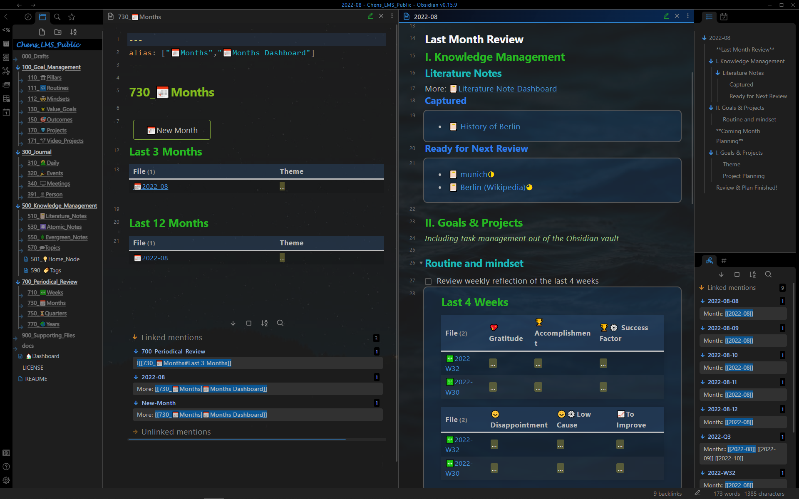

Show Case - Periodic Review
Periodic Review Dashboard
All Periodic Reviews on one page: weekly review, monthly review, quarterly review and yearly review.

Weekly review
Weekly Review dashboard (left pane) with a weekly review note (right pane).
Dashboard: Summary of the weekly reflection: gratitude, accomplishment, success factor...
Weekly Review: Clean up, weekly reflection, a summary of the week...
Monthly review
Monthly Review dashboard (left pane) with a monthly review note (right pane).
Dashboard: Summary of the monthly theme.
Monthly Review: Spaced repetition of the knowledge notes, update routine and mindset...

Quarterly review
Quarterly Review dashboard (left pane) with a quarterly review note (right pane).
Dashboard: Summary of the quarterly theme.
Quarterly Review: Clean up, Reflection of the system ...
Yearly review
Yearly Review dashboard (left pane) with a yearly review note (right pane).
Dashboard: Summary of the yearly theme.
Quarterly Review: Past year review, coming year planning